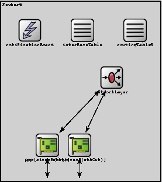
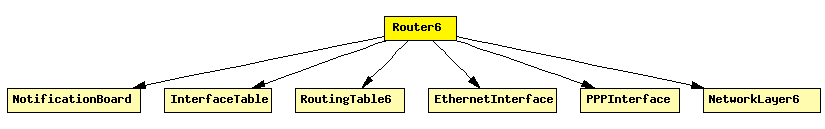

File: Nodes/IPv6/Router6.ned
IPv6 router.
The following diagram shows usage relationships between modules, networks and channels. Unresolved module (and channel) types are missing from the diagram. Click here to see the full picture.
If a module type shows up more than once, that means it has been defined in more than one NED file.
| EthernetInterface | Ethernet network interface. Corresponds to the prototype NetworkInterface. Complements EtherMAC and EtherEncap with an output queue for QoS and RED support. |
| InterfaceTable | Keeps the table of network interfaces. |
| NetworkLayer6 | Represents an IPv6 network layer (L3). |
| NotificationBoard | Using NotificationBoard, modules can now notify each other about "events" such as routing table changes, interface status changes (up/down), interface configuration changes, wireless handovers, changes in the state of the wireless channel, mobile node position changes, etc. |
| PPPInterface | PPP interface. Complements the PPP module with an output queue for QoS and RED support. |
| RoutingTable6 | IPv6 Routing Table and Neighbour Discovery data structures. |
| Name | Direction | Description |
|---|---|---|
| in [ ] | input | |
| out [ ] | output | |
| ethIn [ ] | input | |
| ethOut [ ] | output |
| Name | Type | Description |
|---|---|---|
| routingTable6.routingTableFile | xml | |
| networkLayer.ipv6.procDelay | numeric const | |
| ppp[*].queueType | string | |
| eth[*].queueType | string | |
| eth[*].mac.promiscuous | bool | if true, all packets are received, otherwise only the ones with matching destination MAC address |
| eth[*].mac.address | string | MAC address as hex string (12 hex digits), or "auto". "auto" values will be replaced by a generated MAC address in init stage 0. |
| eth[*].mac.txrate | numeric | maximum data rate supported by this station (bit/s); actually chosen speed may be lower due to auto- configuration. 0 means fully auto-configured. |
| eth[*].mac.duplexEnabled | bool | whether duplex mode can be enabled or not; whether MAC will actually use duplex mode depends on the result of the auto-configuration process (duplex is only possible with DTE-to-DTE connection). |
| eth[*].mac.writeScalars | bool | enable/disable recording statistics in omnetpp.sca |
| eth[*].encap.writeScalars | bool | enable/disable recording statistics in omnetpp.sca |
module Router6 gates: in: in[]; out: out[]; in: ethIn[]; out: ethOut[]; submodules: notificationBoard: NotificationBoard; display: "p=60,60;i=block/control"; interfaceTable: InterfaceTable; display: "p=150,60;i=block/table"; routingTable6: RoutingTable6; parameters: isRouter = true; display: "p=240,60;i=block/table"; networkLayer: NetworkLayer6; gatesizes: ifIn[sizeof(out)+sizeof(ethOut)], ifOut[sizeof(out)+sizeof(ethOut)]; display: "p=200,141;i=block/fork;q=queue"; ppp: PPPInterface[sizeof(out)]; display: "p=90,257,row,110;q=l2queue;i=block/ifcard"; eth: EthernetInterface[sizeof(ethOut)]; display: "p=145,257,row,110;q=l2queue;i=block/ifcard"; connections nocheck: // connections to network outside for i=0..sizeof(out)-1 do in[i] --> ppp[i].physIn; out[i] <-- ppp[i].physOut; ppp[i].netwOut --> networkLayer.ifIn[i]; ppp[i].netwIn <-- networkLayer.ifOut[i]; endfor; for i=0..sizeof(ethOut)-1 do ethIn[i] --> eth[i].physIn; ethOut[i] <-- eth[i].physOut; eth[i].netwOut --> networkLayer.ifIn[sizeof(out)+i]; eth[i].netwIn <-- networkLayer.ifOut[sizeof(out)+i]; endfor; endmodule